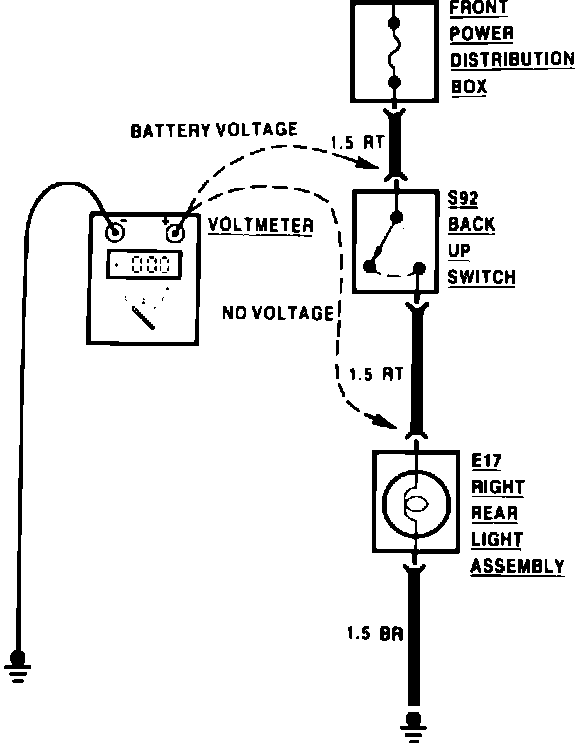
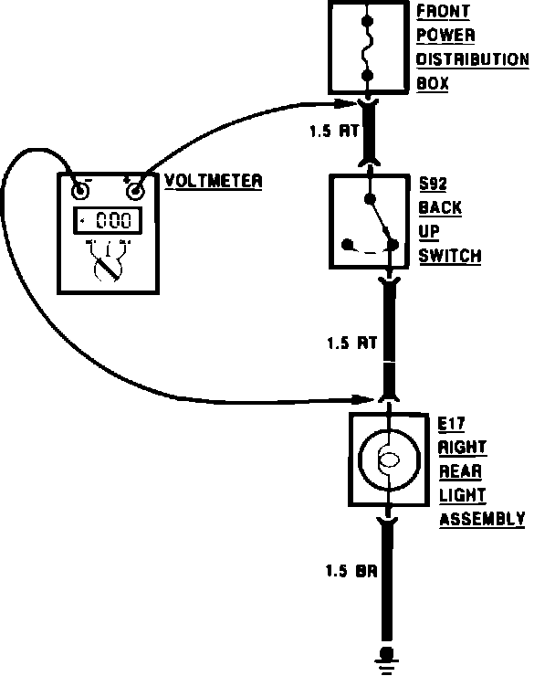
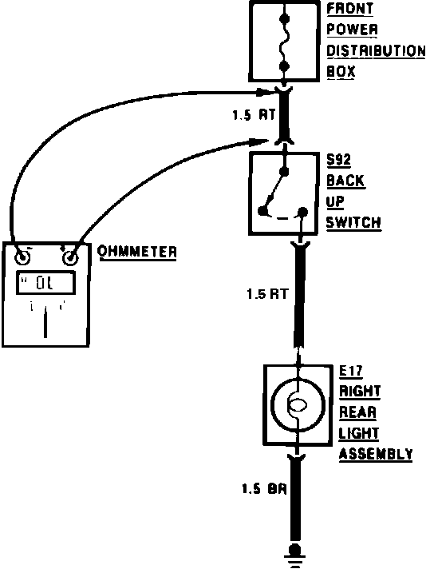
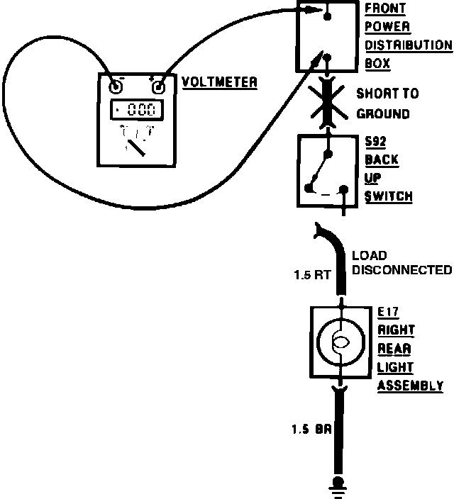
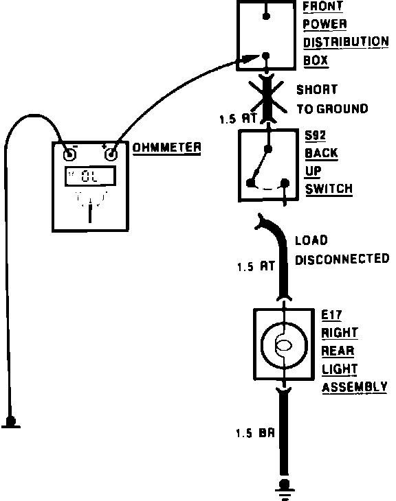
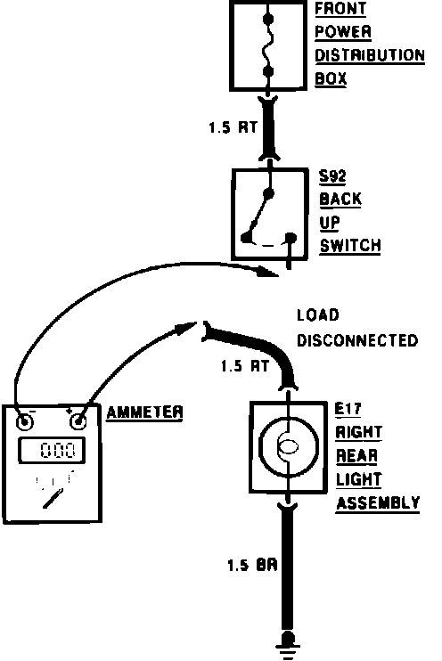

Troubleshooting Tests
Voltage Test:

VOLTAGE TEST
This test measures voltage in a circuit. By taking measurements at several points (terminals or connectors) along the circuit, you can isolate the problem.
To take a voltage measurement, connect the negative lead of the voltmeter to the battery's negative terminal or any other known good ground. Connect the positive lead of the voltmeter to the point you want to test. The voltmeter will measure the voltage present in the circuit.
Voltage Drop Test:

VOLTAGE DROP TEST
Wires, connectors, and switches are designed to conduct current with a minimum loss of voltage. A voltage drop of more than one volt indicates a problem.
To test for voltage drop, connect the voltmeter leads to connectors at opposite ends of the circuit's suspected problem area. The positive lead should be connected to the circuit connector closest to the power source. The voltmeter will show the voltage drop between the two points. Any switches in the circuit should be ON during this test.
Continuity Test:

CONTINUITY TEST
Before performing a continuity test, disconnect the car's battery. Zero the ohmmeter by holder the test leads together and setting the meter to zero. Isolate the circuit to be tested. Connect the ohmmeter leads to opposite ends of the circuit's suspected problem area. The ohmmeter will show the resistance across the circuit. Continuity can also be tested with a self-powered test light.
CAUTION: DO NOT use an ohmmeter or self-powered test light on solid state or computer related circuits. The voltage that an ohmmeter/test light applies to a circuit could damage these components.
Short Test Using Voltmeter:

SHORT TEST USING A VOLTMETER
To locate a wiring short to ground, remove the blown fuse and disconnect the load. Connect the voltmeter leads to the fuse terminals. The positive lead should be connected to the terminal closest to the power source.
Starting near the power source, move the wire harness back and forth while watching the voltmeter. If the voltmeter shows a reading while moving a particular section of the harness, the harness has a short to ground.
Short Test Using Ohmmeter:

SHORT TEST USING AN OHMMETER
Disconnect the battery. Zero the ohmmeter by holder the test leads together and setting the meter to zero. Remove the blown fuse and disconnect the load. Connect the ohmmeter leads to the fuse terminals.
Starting near the power source, move the wire harness back and forth while watching the ohmmeter. If the ohmmeter shows a low or no resistance reading while moving a particular section of the harness, the harness has a short to ground.
Current Test Using Ammeter:

CURRENT TEST USING AN AMMETER
To measure the current in a circuit, connect the ammeter leads to the connectors or terminals in SERIES with the circuit. The ammeter will show the current through the circuit.